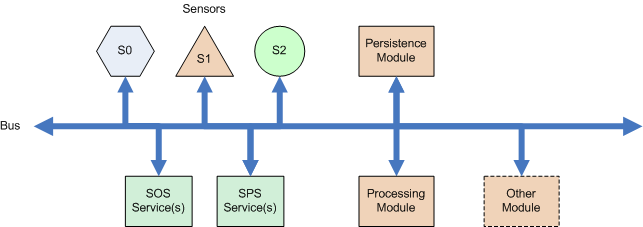

Design Principles
This page describes some of the key design principles used within Open Sensor Hub. These are important concepts to understand if you want to contribute to the core or develop your own SensorHub modules (e.g. sensor drivers, database bindings, etc.)
The Event Bus
SensorHub is designed around a generic bus through which transits all events coming from and going to the connected sensors and processes. SensorHub drivers convert standard or proprietary sensor/actuators protocols to the SWE common format so that the data can be communicated through the bus and made available to all other SensorHub components.

All data sent through the bus is described using the SWE Common Data Model so that each message is auto-describing and can be decoded by any sub-function connected to it.
The persistence engine is also connected to the bus and can archive the desired messages (data, commands, status info, etc…).
Web services that use real-time data are also connected to the bus and can distribute any data through standard web interfaces such as the Sensor Observation Service from OGC.
Sensor Drivers
Drivers are responsible for converting data going to and from the sensors into SWE Common messages, as well as for building a SensorML description of the connected sensor. The sensor is then always represented by this description in the system.
Whenever possible, this description is fully or partially generated automatically from information stored in the sensor device (i.e serial number, calibration tables, etc.). If the sensor does not contain any such information, the driver generates a very simple document containing only the sensor ID, type and measurement output structure. In any case, this SensorML description can be further completed by the user when installing the sensor (the user will have to input the sensor location for instance).
Sensor drivers can be programmed to send data to the bus in various manners : * In ‘push’ mode, the sensor is programmed to make measurements at regular intervals or when certain conditions are met. In this case, the user does not request a reading explicitely. * In ‘poll’ mode, the user requests a reading from the sensor everytime. If no requests are made, no data is read. Both modes can be mixed.
Persistence/Storage Modules
The persistence engine is able to store any data that transits on the bus in a persistent storage. A simple API and several storage implementations are provided as part of the SensorHub software :
-
The PERST based storage uses a pure Java embedded object database which allows very efficient storage of data with a very small footprint (typically for embedded devices). See the [DataPersistencePERST PERST persistence page] for more details.
-
The PostgreSQL/PostGIS storage allows storing of SWE Common data in a robust SQL database but requires more powerful hardware and a database server to run.
In both cases, the database schema used is generic and can be used to store any data structure described in SWE Common and allows indexes on the specified fields.
The administration console allows the user to select what messages are to be stored and how (i.e. table name, what indexes should be created, etc.).
Web Service Modules
Web services can be developed and connected to other SensorHub modules to provide remote access to the different functions. SensorHub software already contains useful OGC services designed to communicate bi-directionnally with the connected sensors:
-
The Sensor Observation Service (SOS) is connected to the bus and to the persistent storage and allows retrieval of historical data as well as real-time data measurements.
-
The Sensor Planning Service (SPS) is connected to the bus and allows to send commands to the connected sensor.
-
A simple Web Feature Service (WFS) is connected to the sensor registry and allows one to retrieve the full SensorML descriptions of all connected sensors as well as simplified features containing only the name and location of the sensors for display on a map.
All web services are configurable through the administration web interface but most of the configuration is extracted automatically from the SensorML description of the sensors. The user mainly selects what sensor outputs should be exposed through SOS and/or what sensor parameters should be able to receive commands from SPS.
Processing Modules
The processing module is connected to the bus and the persistent storage and allows deployment of several processing instances that can either process data transiting on the bus (aka event-based or streaming processing) or process data from the storage on-demand (aka on-demand processing).
Process chains can be configured using the SensorML language so that new algorithms can be easily created without writing any code simply by connecting basic functions in the diagram editor (not currently available). However, the use of SensorML is not required and one can also write a plain Java plugin compliant with the processing API for implementing a particular algorithm.
Example Configuration
The diagram below shows an example configuration with one sensor, one processing module, one storage module, SOS and SPS web services :

-
The sensor is connected via a proper sensor driver that pushes data to the bus as soon as it’s available. Full description of the data structure is made available to other module via the sensor API.
-
The processing module instance listens to new sensor data and processes it as soon as it’s available. The result is pushed back to the bus. Inputs and outputs are fully described in SensorML.
-
The storage module instance listens to both raw sensor and processed data and archives it all in a file or database. The archived data is then indexed and made available via the persistence API.
-
The SOS service can subscribe to and stream real-time sensor data when a user requests direct connection to it. It can also fetch data from archive storage on demand. In this case, data can be filtered by time, location, etc.
-
The SPS service is used to send commands to the sensor, such as turning the sensor on/off, changing the sampling rate, programming measurement triggers, etc.
Of course, this is just an example and there are many more ways of configuring SensorHub. In particular, it is possible to :
-
Connect several instances of SensorHub via standard OGC services so that one can create a larger network.
-
Implement feedback loops so that one sensor can be used to trigger different behavior of another sensor.
-
Implement complex processing flows that fuse data from many different sensors